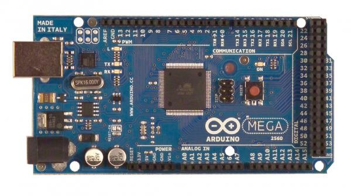
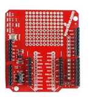
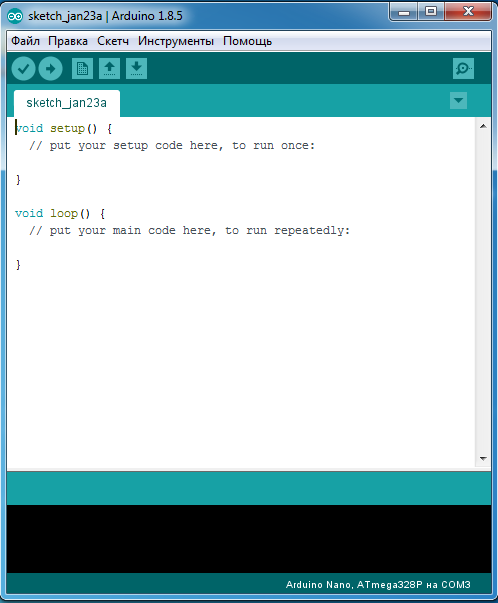

Обзор программируемого модуля arduino
Arduino это электронный конструктор и удобная платформа быстрой разработки робототехнических устройств. Платформа пользуется высокой популярностью во всем мире благодаря удобству и простоте языка программирования, а так же открытой архитектуре и программному коду. Специфической областью проектирования, связанной с arduino является интерактивное аппаратное моделирование.
Аппаратное моделирование позволяет разрабатывать интерактивные устройства, которые могут взаимодействовать с людьми посредством датчиков и механизмов, управляемых микропроцессором.
Первый прототип аппаратного модуля был выпущен в 2005 г., программистом Массимо Банци, доцентом института проектирования взаимодействий города Ивреа (Interaction Design Institute Ivrea, IDII). Он имел простейший дизайн и еще не назывался arduino. Название было придумано позже, после успешного старта первых продаж. В 2012 году компания распалась, и теперь данные модули выпускают две организации «Arduino LLC» и «Arduino SRL», каждая из которых вносит свои модификации в первоначальные модели плат.
Для разработки робототехнических устройств при помощи arduino необходимо иметь:
1. Основную плату arduino;
2. Платы расширения (шилды);
3. Интегрированную среду разработки arduino – Arduino IDE.
Каждая основная плата, в независимости от своего типа, снабжена следующими основными узлами:
- разъем питания, предназначенный для подключения источника питания. Источниками питания могут выступать как отдельный адаптер, так и персональный компьютер, питающий устройство arduino через USB порт. Основное назначение USB порта – это загрузка готовых программ на основную плату arduino для последующего выполнения. USB порт есть не у всех моделей;
- Разъемы входов-выходов (пины), предназначены для подключения внешних периферийных устройств, и других подключений, используемых коннекторы. Все пины имеют свое назначение и по разному обозначен на основной плате:
GND – заземление основной платы для предотвращения нежелательных перепадов напряжения;
5V – предназначены для подключения устройств питающихся от напряжения 5 вольт;
3.3V - предназначены для подключения устройств питающихся от напряжения 3.3 вольта;
analog – используются для подключения аналоговых датчиков, как например датчик температуры, для последующей оцифровки сигнала;
Digital – используются для цифровых входящих и исходящих сигналов;
PWM – эти пины могут имитировать аналоговый цифровой сигнал;
AREF – в отдельных случаях на него подается отдельное опорное напряжения для аналого-цифрового преобразователя;
- кнопка перезагрузки – перезапускает выполнение программы, запущенной на основной плате arduino;
- индикатор питания – загорается при подключении основной платы к источнику питания через разъем питания или USB порт. Является основным показателем работоспособности платы;
- TX и RX светодиоды – используются для визуального отображения загрузки или передачи данных основной платой arduino;
- главная интегральная микросхема – микропроцессор, установленный на основную плату arduino. Главная интегральная микросхема выполняет все вычислительные операции и отвечает за работу остальных компонентов;
- регулятор напряжения – используется для контроля напряжения, поступающего на плату.
Существует несколько разновидностей основных плат, отличающихся размерами, количеством разъемов для подключения периферийных устройств и совместимостью с платами расширения:
- arduino – имеет стандартный размер и 20 пинов, а также полную совместимость со всеми платами расширения.
- arduinoMega – размер расширенный, по сравнению со стандартным, количество пинов увеличено до 70, совместима не со всеми платами расширения
- arduinoNano – размер уменьшен, по сравнению со стандартным, количество пинов несколько больше стандарта – 22, не совместима с платами расширения;
- arduinoMini – имеет самый маленький размер из выпускаемых плат линейки arduino, количество пинов – 20, не совместима с платами расширения. Единственная основная плата не имеющая модуля USB.

Внешний вид основной платы arduinoMega.
Платы расширения являются самостоятельными электронными схемами, которые используются для расширения возможностей основной платы. Платы расширения легко устанавливаются на основную плату arduino, присоединяясь к разъемам входов-выходов. Основная их особенность заключается в возможности подключать несколько плат расширения к одной основной плате, тем самым создавая любую необходимую в конкретном случае конфигурацию робототехнической системы. Как правило все моторы, подключаемые к arduino используют платы расширения.

Внешний вид платы расширения arduino.
Интегрированная среда разработки Arduino IDE это открытый программный продукт для написания кода и его последующей загрузки на основную плату arduino.
Платы расширения являются самостоятельными электронными схемами, которые используются для расширения возможностей основной платы. Платы расширения легко устанавливаются на основную плату arduino, присоединяясь к разъемам входов-выходов. Основная их особенность заключается в возможности подключать несколько плат расширения к одной основной плате, тем самым создавая любую необходимую в конкретном случае конфигурацию робототехнической системы. Как правило все моторы, подключаемые к arduino используют платы расширения.

Интерфейс среды разработки Arduino IDE.
Основное окно среды разработки arduino состоит из:
- встроенного текстового редактора программного кода, предназначенного для набора команд;
- области сообщений, предназначенной для отображения служебной информации;
- окна вывода текста или консоли, для отображения сообщений о процессе компиляции;
- панели инструментов с кнопками часто используемых команд.
Для программирования основной платы arduino в среде разработки используется язык основанный на C/C++. Среда разработки поддерживает загрузку дополнительных библиотек для расширения доступных функций. Программа, написанная в среде разработки arduino, называется скетчем [20]. Для установки среде разработки arduino на персональный компьютер или ноутбук требуется предустановленная ОС семейства Windows, Linux или Mac OS X.
К преимуществам программируемого модуля arduino можно отнести высокую степень масштабируемости в плане реализации творческих идей и большое количество дополнительных датчиков.
Недостатками arduino являются сложный порог начала обучения, подразумевающий знание языка программирования C/C++, и знания электронных схем, а также отсутствия готовых наборов для обучения, что приводит к необходимости заранее подготавливать необходимый минимальный набор датчиков.
готовых наборов для обучения приводит к тому, что производители не поставляют учебно-методических комплексов с основной платой arduino. При изучение робототехники на базе arduino необходимо использовать учебную литературу разработанную сторонними институтами и частными компаниями.
По ardunio существует большое количество разнообразной сторонней литературы. Наиболее качетвенными с точки зрения рассмотренного материала являются:
1. Учебник по программированию «Программирование микроконтроллерных плат Arduino/Freeduino».
2. Учебное пособие «Проекты с использование контроллера Arduino».
3. Учебник «Arduino Essentials».
Учебник «Программирование микроконтроллерных плат Arduino/Freeduino» английского автора Уилла Соммера содержит данный по программированию датчиков подключаемых к основной плате arduino. Кроме сведений по программированию в учебнике содержится общий обзор микроконтроллеров, с плавным переходом к микроконтроллеру arduino. Данный учебник можно использовать для обучения основам программирования вместе с дополнительными материалами, посвященными как теоретическим основам робототехники, так и механизмов создания робототехнических устройств с использованием arduino. Минусами обучения по книге «Программирование микроконтроллерных плат Arduino/Freeduino» является небольшой объем теоретических данных по робототехнике и датчикам, а так же практических примеров сборных устройств. Что делает необходимым расширять информацию дополнительными учебными комплексами.
Учебное пособие «Проекты с использование контроллера Arduino» российского автора Виктора Петина содержит описание практических моделей, построенных на базе arduino, а так же примеры исходного кода, необходимого для функционирование роботов. Данное пособие подразумевает наличие общих теоретических знание по робототехнике и понимания принципов работы микросхем. Минусами учебного пособия «Проекты с использование контроллера Arduino» являются малая теоретическая база, предоставляемая автором и малое количество материала, отведенная программированию.
Учебник «Arduino Essentials» английского автора Френсиса Переа, дает большой теоретический объем информации по микроконтроллеру arduino. Минусами данного учебника являются отсутствие примеров готовых моделей и программ, а так же англоязычный текст, что усложняет его использование для обучения на территории России.